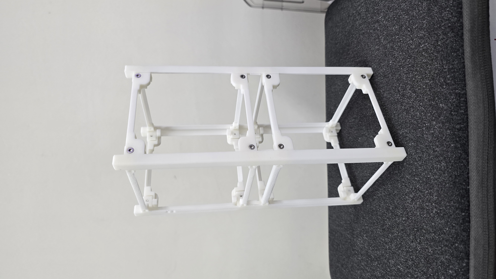

MODAL TEST · FRF · MATLAB
발사 진동의 공진 위험을 모달시험으로 확인하다
발사 중 진동과 구조체의 고유진동수가 겹치면 공진으로 응답이 커질 수 있습니다. 3U 큐브위성의 고유진동수와 감쇠비, 모드 형상을 확인하기 위해 가진 시험 환경을 구성하고 계측부터 MATLAB 분석·시각화까지 수행했습니다.
- 목적
- 발사 진동 공진 위험 확인
- 담당
- 시험 환경 구축·계측·분석
- 계측
- 가진기·힘 센서·8채널 가속도계
- 분석
- FRF·Peak Picking·LSCE
왜 시험했는가
발사체가 만드는 진동 대역과 위성 구조체의 고유진동수가 겹치지 않도록, 설계 단계에서 구조의 동특성을 먼저 확인해야 했습니다.
발사체 상승 과정의 랜덤 진동과 음향 하중은 구조물에 넓은 주파수 대역의 가진을 전달합니다. 이 가운데 구조체의 고유진동수와 겹치는 성분은 공진을 일으켜 변형과 응답을 증폭하고, 체결부나 탑재 부품의 손상 위험을 높일 수 있습니다.
저는 발사 환경과 큐브위성 구조시험 선행연구를 조사해 시험 목적과 조건을 정리했습니다. 연구의 목표는 3U 구조체의 고유진동수, 감쇠비와 실제 변형 형태를 실험으로 찾아 구조설계 판단에 활용할 근거를 만드는 것이었습니다.
담당 범위와 시험 구성
지도교수 변경 이후 과제가 새로 시작되던 시점에 합류했습니다. 다른 연구자가 3D 프린팅 기반 3U 프레임 제작을 맡았고, 저는 모달 가진 시험 환경 구축부터 계측, 분석과 결과 시각화까지 담당했습니다.
구조체를 번지 로프로 매달아 자유 경계조건을 구성한 뒤, 가진기와 힘 센서로 입력을 제어하고 8개 가속도계로 각 지점의 응답을 동시에 측정했습니다. 최종 시험에서는 20~2000 Hz 랜덤 가진을 적용하고 진동 제어 계측 시스템에서 FRF를 확보했습니다.


분석 환경을 다시 만들다
연구실에 보관된 것으로 알았던 상용 분석 소프트웨어의 라이선스 키가 유실되어 복구 방법을 찾는 동안 일정이 지체됐습니다. 상용 도구가 있어야만 분석할 수 있다는 전제를 다시 검토하고, MATLAB과 상용 도구의 결과를 비교한 논문을 근거로 지도교수님과 MATLAB 전환을 협의했습니다.
모달시험 경험을 보완하기 위해 장비 업체 교육에도 직접 참여했습니다. 이후 계측 시스템이 산출한 주파수별 FRF 크기와 위상을 MATLAB에서 복소수 응답으로 재구성하고, 모든 채널을 함께 비교하는 분석 절차를 만들었습니다.

분석 결과
센서가 진동하지 않는 절점에 놓일 가능성을 고려해 8개 채널의 FRF를 함께 비교하고, 전체 응답에서 공통으로 나타나는 모드 후보를 찾았습니다. Peak Picking과 LSCE 결과를 교차 검토해 고유진동수와 감쇠비를 추정한 뒤, 센서 위치에 대응시켜 3차원 모드 형상과 애니메이션으로 시각화했습니다.